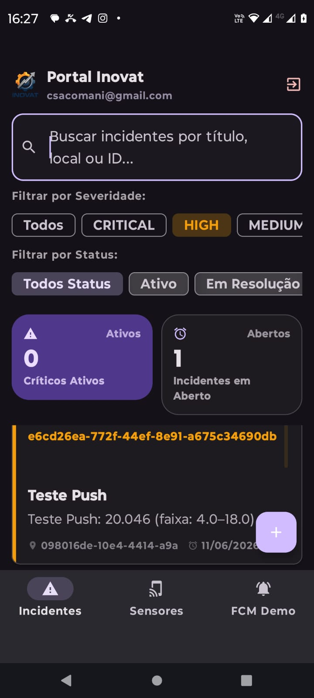

Coleta segura
Sensores, gateways e controladores publicam dados em topicos MQTT padronizados, com credenciais por dispositivo e controle de ACL no broker.
Telemetria IoT industrial, agricola e operacional
Plataforma web para conectar sensores e controladores via MQTT, acompanhar dados em tempo real, agir sobre alarmes e transformar telemetria em decisao operacional.

Da ponta ao painel
Sensores, gateways e controladores publicam dados em topicos MQTT padronizados, com credenciais por dispositivo e controle de ACL no broker.
A ingestao organiza telemetria, status, variaveis e indicadores para consulta historica, graficos, KPIs e relatorios.
A central de alarmes prioriza incidentes, apoia notificacoes, webhooks e rotinas de acompanhamento para equipes de campo.
Recursos principais
Topicos por tenant, publicacao de telemetria, status online/offline e comandos para dispositivos.
Paineis para leitura rapida da operacao, graficos em tempo real e historico por sensor ou aplicacao.
Incidentes por severidade, status de atendimento, regras, notificacoes e integracao por webhook.
Provisionamento de controladores, canais digitais e analogicos, Modbus e comandos remotos com rastreio.
Templates para casos de uso como solo, ambiente refrigerado, processos industriais e monitoramento customizado.
Exportacoes historicas, rastreabilidade de acoes, trilhas de auditoria e suporte a rotinas de conformidade.
Arquitetura
Sensores e controladores enviam leituras e recebem comandos.
Autenticacao e ACLs isolam cada cliente no seu namespace.
Workers gravam series temporais e verificam eventos operacionais.
Dashboards, alarmes, relatorios e administracao em uma interface.
Seguranca e governanca
O Portal Inovat combina autenticacao moderna, segregacao de topicos, ACLs MQTT, logs de auditoria e protecoes de infraestrutura para manter dados e dispositivos organizados por cliente.
Proximo passo
Apresente sua necessidade de monitoramento e veja como sensores, controladores, dashboards e alarmes podem ser organizados em um fluxo unico de telemetria.